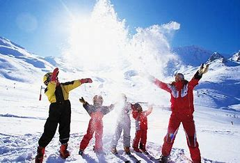

get to know georgia
ბაკურიანი — დაბა ბორჯომის მუნიციპალიტეტში. თემის ცენტრი (დასახლებები: ბაკურიანი, ბაკურიანის ანდეზიტი, დიდი მიტარბი, მაჭარწყალი, პატარა მიტარბი, თორი, წინუბანი). წარმოადგენს ბორჯომი-ბაკურიანის სარკინიგზო ხაზის ბოლო პუნქტს. ბაკურიანში აღმოჩენილია მეგალითური კულტურის ნაშთი, შემორჩენილია ადრინდელი ფეოდალური ხანის საკულტო ნაგებობა „პანტნარის ტაძარი“. ბაკურიანი პოპულარული სამთო და სათხილამურო კურორტია
ბაკურიანის პირველი მოსახლეები უკრაინელები იყვნენ. 1816 წელს ბორჯომის ხეობაში უკრაინელების 460 ოჯახი დასახლდა. აქედან 80-მდე ოჯახი ბაკურიანში, ხოლო დანარჩენები თორსა და ანდეზიტში. უკრაინელები ხე-ტყის დამუშავებაზე მუშაობდნენ. ადგილობრივი ხის მასალა გადიოდა გერმანიაში მუსიკალური საკრავების დასამზადებლად. ბაკურიანში დღემდეა შემორჩენილი ადგილები, რომელთაც „ყურუმსებს“ (ყრუ რუსები) ეძახიან
XIX საუკუნეში ბორჯომის ხეობა ბორჯომის მინერალური წყლის სამკურნალო თვისების გამო, ყურადღების ცენტრში მოექცა. 1898-1901 წელს გაიყვანეს ბორჯომ-ბაკურიანის ვიწროლიანდაგიანი რკინიგზა, რამაც ბაკურიანის განვითარების დაუდო სათავე. რკინიგზის არსებობამ, 1902-1910 წლებში, კოხტაგორის ფერდზე, როლოვისა და ფომინის ხელმძღვანელობით, მაღალმთის ბოტანიკური ბაღის შენება გააადვილა.
ევროპაში სათხილამურო სპორტის ბუმი იყო და საქართველოში ახალჩამოსული გიორგი ნიკოლაძე, თავის მეგობრებთან ერთად სათხილამურო სპორტის პოპულარიზაციაზე ოცნებას იწყებდა. ის პირველი იყო, რომელმაც ბაკურიანში პირველი ქართველი მოთხილამურეები ჩაიყვანა. 1926 წელს ბაკურიანს დაბის სტატუსი მიენიჭა.
1934 წელს პროლეტარული ტურიზმისა და ექსკურსიების საზოგადოებამ იჯარით აიღო შემდგომში ბავშვთა სანატორიუმის შენობა და იქ სამთო-სათხილამურო სკოლა და ზამთრის ფიზკულტურის სახლი დააარსა. 1935 წელი ბაკურიანის, როგორც სათხილამურო ცენტრის, დაბადების წელია. იანვრის დასაწყისში აქ უკვე ხალხმრავლობა იყო. ჩამოვიდნენ ამიერკავკასიის ინდუსტრიული ინსტიტუტის სტუდენტები, რომლებიც გაერთიანებულნი იყვნენ ინსტიტუტის სათხილამურო სექციაში. ინსტიტუტის თავკაცის, ბოჯგუას ხელშეწყობით, სტუდენტების საწრთვნელი შეკრებები ბაკურიანში ტრადიციად იქცა. ამ პერიოდში ბაკურიანში ჩამოდიოდნენ თბილისის სამედიცინო ინსტიტუტისა და სახელმწიფო უნივერსიტეტის წარგზავნილებიც. 1935 წლის 6 იანვარს საზეიმო ვითარებაში გაიხსნა სამთო-სათხილამურო სკოლა და ფიზკულტურის სახლი. ეს მოვლენა იმდროინდელმა პრესამ ვრცლად გააშუქა. ამავე წელს ჩამოყალიბდა ამიერკავკასიის ნაკრებიც. იმ პერიოდის საბჭოთა პრესაში ბაკურიანს „საბჭოთა სათხილამურო სპორტის დედაქალაქი” და „საბჭოთა დავოსი“ უწოდეს. 1950 წელს აშენდა ჯერ 45, ხოლო შემდეგ – 75 მეტრიანი ტრამპლინი, რამაც უფრო მოიზიდა სათხილამურო სპორტის მოყვარულები. 1954 წელს ბაკურიანში დაიდგა საბჭოთა კავშირში პირველი საბუქსირო გზა. 1960 წელს დასრულდა ბაკურიანის ელექტრიფიცირება. 2005 წელს ბაკურიანი წარადგენილი იყო 2014 წლის ზამთრის ოლიმპიური თამაშების მასპინძლობის ერთ-ერთ კანდიდატად.
.jpg)
ბაკურიანი ცნობილი სამთო-კლიმატური კურორტი და საერთაშორისო მნიშვნელობის სამთო-სათხილამურო ცენტრია. 1932 წელს გაიხსნა პირველი სათხილამურო ბაზა. ბაკურიანიდან კოხტაგორის მთაზე (1,3 კმ) და ცხრაწყაროს უღელტეხილზე (3,5 კმ) გაყვანილია საბაგირო გზები, აგებულია სათხილამურო ტრამპლინები. დიდველის სათხილამურო გზებზე მოქმედებს ხელოვნური გათოვლიანება.
.jpg)
ბაკურიანი მდებარეობს თრიალეთის ქედის ჩრდილოეთ კალთაზე, მდინარე ბაკურიანისწყლის (გუჯარეთისწყლის შენაკადი) ნაპირას, ზღვის დონიდან 1700 მ, ბორჯომიდან 30 კმ. ბაკურიანი გაშლილია ე. წ. ბაკურიანის ქვაბულის ძირზე, რომელიც ვულკან მუხერიდან ამონთხეული ლავით არის აგებული. ჰავა ზღვის ნოტიოდან ზომიერად ნოტიო კონტინენტურისაკენ გარდამავალია, ზამთარი - ცივი, თოვლიანი, ზაფხული - ხანგრძლივი. საშუალო წლიური ტემპერატურა 4,3 °C, იანვრისა 7,2 °C, აგვისტოსი 15 °C. ნალექები 734 მმ წელიწადში. თოვლის საფარი (64 სმ სისქის) დეკემბრის დასაწყისიდან მარტის ბოლომდე. ბაკურიანის მიდამოები შემოსილია წიწვიანი ტყით. დაბის მიმდებარე ტერიტორიებზე გაშენებულია ბაკურიანის ბოტანიკური ბაღი.